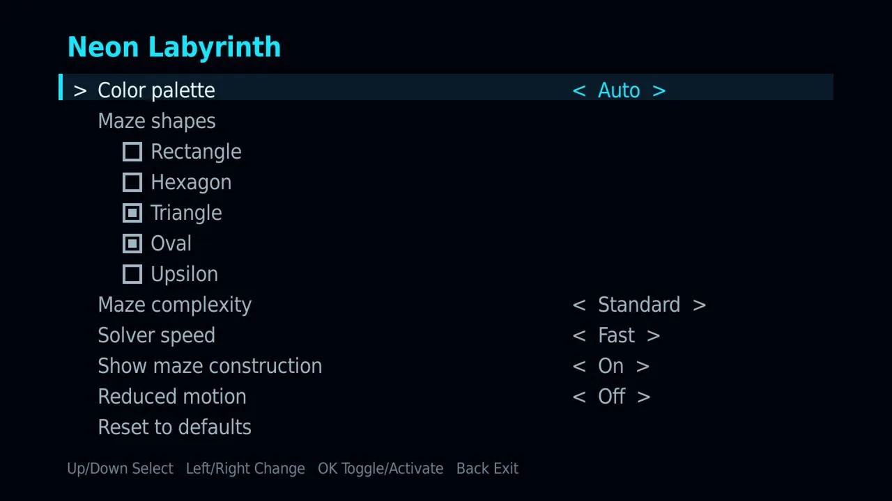

Support
Setup · settings · troubleshooting · release notes
Setting Neon Labyrinth as your screensaver
- Install Neon Labyrinth from the Roku Channel Store.
- On your Roku, open Settings → Theme → Screensavers.
- Select Neon Labyrinth from the list.
- Optionally adjust Settings → Theme → Screensavers → Change wait time to control how quickly it starts when the device goes idle.
The screensaver starts automatically when your Roku sits idle. Pressing any button on the remote ends it immediately and returns you to whatever you were doing.
Screensaver settings
From the same screen, choose Change screensaver settings to adjust:

- Color palette — five fixed neon palettes, or Auto, which invents a fresh scheme every maze.
- Maze shapes — five checkboxes: Rectangle, Hexagon, Triangle, Oval, and Upsilon (an octagon-and-square grid). Every cycle picks at random from the checked shapes. All five start checked; the last checked shape can't be turned off, so there is always something to draw.
- Maze complexity — Relaxed, Standard, or Intricate. Each level has about the same number of cells on every shape, so a Standard hexagon maze takes about as long as a Standard rectangle.
- Solver speed — Slow, Standard, or Fast exploration.
- Show maze construction — watch walls draw themselves, or have each maze fade in complete.
- Reduced motion — a calmer presentation with gentler pulses and no rapid flashes.
- Reset to defaults — puts every setting back where it started: Auto palette, all five shapes, Standard complexity and speed, construction on, reduced motion off.
Troubleshooting
- The screensaver never starts. Confirm Neon Labyrinth is selected under Settings → Theme → Screensavers, and check the wait time setting — the device must sit idle that long with no remote input.
- It won't start, or the screen goes black when it does. Restart your Roku: Settings → System → Power → System restart (or unplug it for ten seconds and plug it back in). Roku keeps the screensaver loaded between runs, and a restart clears whatever state it was left in. If it still misbehaves after a restart, email us with your Roku model and software version.
- I only ever see one shape (or I never see a particular one). Open Change screensaver settings and look at the Maze shapes checkboxes — only checked shapes are in the rotation. Random means random: with all five on, the same shape can still come up a few cycles in a row.
- A checkbox won't turn off. That's the last shape still checked. Check another shape first, then uncheck the one you don't want.
- My settings look wrong or reset themselves. The screensaver validates its stored settings every launch; if a value is ever unreadable it restores safe defaults rather than failing to start. Re-pick your preferences and they will persist.
- It exited on its own. Any remote press — including from a phone remote app or a paired voice remote — ends the screensaver by design.
- Anything else. Email us. Include your Roku model and software version (Settings → System → About) if you can — it helps a lot.
Release notes
- 2.0.0 September 2026 Five maze shapes: rectangle, hexagon, triangle, oval, and upsilon (octagon + square). Pick which shapes rotate with new checkboxes in settings — all five are on by default. Triangle mazes solve at a brisker pace. Everything else you know is unchanged.
- 1.0 August 2026 First release. Rectangle mazes, five palettes plus Auto, three complexities, three solver speeds, optional construction phase, reduced motion.